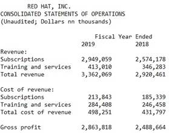

IBM’s Red Hat Enterprise Linux closed source announcement:
Linux finally grows up when z/OS (IBM’s flagship OS) is merged.
Very few people understand why IBM needs RHEL to be closed source. IBM’s RHEL closed source announcement is experiencing the extreme ire of the entire Linux open source community and has gone unnoticed by the z/OS community. Neither understands the decision for this announcement nor how both will be greatly affected. Closed source will not force Google, Amazon, Oracle, Rocky Linux and others to pay for RHEL. Instead, they will easily switch to another free Linux Distro. Someone will move key RHEL features from the last open source to a different open source Linux. Why do people believe that IBMs intent is to boost profits when closed source doesn’t change the RHEL customer base?
Linux is a 20th century dinosaur which needs to be rewritten! Google has an army of thousands whose only job is to keep their 5,500,000 Linux servers running. On average, a Google Linux server computer has 24 cores but never more than 48 cores which means that 24 computations can occur at the same exact moment in time. However, an IBM z/OS Sysplex server computer can have up to 102,400 cores allowing for 102,400 computations at the same exact moment in time. Google could easily reduce their army to a couple hundred people by moving to a couple thousand IBM z/OS Sysplex servers. In layman’s terms, Google has a traffic congestion problem because they use a fleet of cars when they should use a combination of cars, buses, trucks, planes and trains.

Without IBM z/OS technologies in RHEL, RHEL must run as virtualized RHEL servers on IBM z computers using VM or LPAR. There is no benefit for Google to run 5,500,000 virtual Linux servers on a couple thousand IBM z systems versus 5,500,000 cheaper real computers. Linux without z/OS technologies still requires the same Army.
IBM needs a Linux designed for the 21st century that runs efficiently on the most advanced computers in the world. Although IBM z/OS is the most advanced OS in the world, companies refuse to buy z/OS because Linux is free. If the mountain won't come to Muhammad, then Muhammad must go to the mountain. Linux is currently a jack of all trades but master of none. You can run it on any computer but that doesn’t mean it runs well. IBM is looking at implementing z/OS technologies in Linux.
IBM’s closed source policy has made huge design contributions to the Open Source community. Anyone can write code. The biggest flaw with open source is the lack of expert design skills. Google’s 5,500,000 Linux servers demonstrates’ how the lack of expert design skills has impacted Linux. Where would Linux be if DARPA hadn’t designed the internet? It’s very unlikely the coders of open source TCP/IP (Internet) had the design skills to create it from scratch. All the open source coding contributions are insignificant compared to IBM’s expert software technology design contributions (for example: Virtualization (VM, LPAR, VMWare, Virtualbox), Databases, SQL, High Availability, The Cloud, Big Data, HTML and much more). Without the existence of these designs, open source coders would have failed in creating the Linux they love so much. If open source coders had replicated some of IBM’s z/OS efficiencies technologies, we would see Linux running efficiently on computers with more than 100,000 cores.
Closed source is required for IBM to merge z/OS technologies into Linux. In my opinion, IBM is about to move lucrative z/OS technologies to Linux. 70% of the Fortune 500 companies buy z/OS because Linux isn’t capable of providing these critical capabilities. If this move is successful, IBM will have destroyed their z/OS, z/VSE and z/VM customer base thus costing them billions of dollars every year. Open source would cause IBM to expose trade secrets.
Businesses choose RHEL but don’t buy it from RHEL. The Linux Tier List - YouTube is a decent ranking of the more than 40 Linux distro’s. A small minority of businesses use SUSE Linux ($650 million in revenues). The vast majority use a Linux distro based on RHEL (for example: Oracle Linux, Rocky Linux, Alma Linux and RHEL). Even before IBM bought RHEL, RHEL was considered the devil, much like IBM. For instance, Google 2022 revenues were $283 billion but they paid RHEL $0. Instead, they paid Rocky Linux which they installed on many of their 5,500,000 servers. It’s more likely that Google will install SUSE Linux instead of IBM’s RHEL. Even Amazon Linux is based on RHEL but didn’t pay anything to RHEL.
IBM (International Business Machines). Of all the computer companies, IBM represents business needs above all. IBM has the only computers with zero down time which is why they call it “IBM System z”. IBM has the only computers with more than 100 cores thus allowing businesses to have 1 server instead of a server farm with a cast of thousands of employees. IBM has the only computers that are run by business needs instead of by people more knowledgeable about computers than the business. If RHEL is successful, the business will become the master.
False speculation about IBM buying RHEL. It’s a small possibility that IBM wants to force companies to pay for REHL but that doesn’t make sense because they are more likely to lose customers and revenues. Until RHEL went closed source, it made no sense why IBM bought RHEL in 2019. In my opinion, IBM wants to stop discounting hardware for Linux and JAVA. But charging full price will require extra value which in my opinion will be to migrate z/OS technologies into Linux and create a Linux Sysplex. For more than 20 years, IBM partnered with RHEL for IBM z computers. In my opinion, they didn’t buy RHEL for its small revenue stream that is <5% and certainly not to retain open source customer base.
